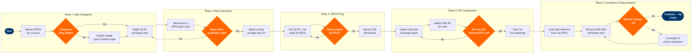

| Step | L4 Step Name | KPI / Target | Pain Point / Risk | Gate |
|---|---|---|---|---|
| 1.1 | Monitor ATPCO tax circulars and government notices | Alert intake within 2 hrs of ATPCO circular publication; 100% circular coverage | ATPCO Tax Information System does not auto-push alerts to the PSS — manual monitoring is required, creating risk of missed effective dates on government-mandated tax changes | |
| 1.2 | Classify surcharge/tax change type and geographic scope | Classification accuracy ≥99%; misclassification rate <1 per quarter | YQ vs. YR distinction is frequently misclassified under IATA Resolution 728, triggering incorrect tax calculation in Amadeus Altéa PSS and downstream GDS fare builds | |
| 1.3 | Assess effective date urgency and regulatory deadline | 100% of government-mandated tax changes filed before regulatory effective date; zero late filings | Government tax changes in high-growth markets (e.g., APAC airport levies, EU ETS surcharges) often arrive with <48 hrs notice, requiring emergency ATPCO filing protocols that bypass the standard 3-day review cycle | ⚠ |
| 2.1 | Model fuel surcharge (YQ) rates by sector distance band | YQ cost recovery rate ≥95% of actual fuel surcharge exposure per sector | Fuel price volatility (±15% intra-quarter) makes static YQ tables misaligned with actual cost within weeks of filing; PROS RM lacks native YQ recalculation — analysts must run Excel models outside the system | |
| 2.2 | Calculate carrier-imposed surcharge (YR) per market and cabin | YR revenue contribution maintains ≥8% of total ticket revenue per long-haul market | YR surcharges are commercially discretionary but are often misread by consumers as government taxes, generating EU Regulation 1008/2008 fare transparency complaints and compliance team workload | |
| 2.3 | Benchmark proposed rates against ATPCO peer submissions | Proposed rates within ±10% of market median for ≥90% of benchmarked sectors | ATPCO Airfare Insight competitor data lags 24–48 hrs, so benchmarking is retrospective; carriers can undercut within hours of filing, invalidating the benchmark before the rate is published | ⚠ |
| 2.4 | Obtain VP Pricing and revenue management sign-off | Sign-off cycle time <24 hrs for standard changes; <4 hrs for emergency filings | SAP Finance approval workflows are not integrated with ATPCO filing system — approval is documented in SAP but filing is manual in ATPCO, creating audit gaps when approval and filing timestamps differ | |
| 3.1 | Configure government tax codes in ATPCO Tax Engine (TC3) | TC3 record accuracy rate ≥99.9%; zero miscoded tax records in quarterly ATPCO audit | ATPCO TC3 configuration for multi-tier tax structures (e.g., UK APD bands A/B, US segment fees + PFC + TSA) requires manual entry of up to 12 sub-records per market — high error risk with no built-in field validation in the ATPCO UI | |
| 3.2 | File YQ/YR surcharge records to ATPCO (TC35/TC36) | Filing submission within 2 hrs of sign-off approval; 100% of records submitted before effective date | ATPCO TC35/TC36 records do not support conditional logic (e.g., 'YQ applies only if fuel index exceeds threshold') — dynamic fuel surcharges must be manually re-filed each time the fuel index crosses a rate band boundary | |
| 3.3 | Validate ATPCO filing acceptance and record integrity | Filing rejection rate <0.5%; all rejections resolved and resubmitted within 1 hr | ATPCO validation errors are returned as cryptic rejection codes requiring specialist knowledge to decode; documentation is maintained in offline PDFs not integrated with the filing UI, causing an average 45-minute resolution time per error | ⚠ |
| 3.4 | Monitor GDS pick-up and cross-channel distribution lag | GDS distribution lag ≤4 hrs post ATPCO effective time for all three major GDS channels | Sabre, Travelport, and Amadeus GDS poll ATPCO on different schedules (Sabre hourly, Travelport 2-hourly, Amadeus 4-hourly), creating distribution windows where channels display different total tax amounts — generating fare integrity complaints from OTAs and TMCs | |
| 4.1 | Update surcharge and tax tables in Amadeus Altéa PSS | Altéa configuration update completed within 2 hrs of ATPCO effective time; zero stale rate records in PSS | Altéa PSS tax table updates are a manual configuration task — there is no automated sync from ATPCO filings to Altéa, requiring a separate maintenance window that can drift from GDS distribution timing and create channel pricing inconsistencies | |
| 4.2 | Update NDC API gateway tax calculation rules | NDC API tax calculation matches ATPCO reference for 100% of test fare builds | The NDC API gateway tax calculation is a separate microservice from Altéa PSS — version mismatches between PSS tax tables and NDC API rules produce pricing inconsistencies between indirect (GDS) and direct (NDC) channels, violating IATA NDC Standard Level 4 fare transparency requirements | |
| 4.3 | Execute end-to-end fare build test across all channels | Test pass rate 100% across all 20 itineraries on first run; zero price discrepancies exceeding €0.01 | Amadeus Selling Platform test environment uses a 6-hr delayed ATPCO snapshot — post-filing tests on live-equivalent data require production credentials, increasing configuration change risk during the testing window | ⚠ |
| 5.1 | Audit post-effective-date fare calculations via ATPCO | Surcharge accuracy on sold fares ≥99.5% within 24 hrs of effective date | ATPCO Airfare Insight audit is sample-based, not exhaustive — systematic miscalculation on low-volume markets can persist for weeks before appearing in the sample, leading to under-collection risk and potential regulatory penalties | |
| 5.2 | Reconcile BSP/ARC settlement data against surcharge revenue | Surcharge revenue variance <1% of expected monthly collection; reconciliation completed within T+5 business days | BSP settlement data does not tag YQ and YR separately from base fare in all markets — revenue accounting must manually decompose settlement records, a process requiring 3–4 hrs per settlement cycle and prone to allocation errors | |
| 5.3 | Investigate variance and initiate corrective ATPCO filing or ADM | Revenue variance >1% resolved and corrected within 5 business days; zero repeat variances for same market within 90-day window | Corrective ATPCO filings for past-ticketed fares require manual Agency Debit Memo (ADM) issuance via BSP/ARC for each affected booking — ADM processing cost can exceed the surcharge variance value for low-value corrections, forcing a commercial write-off vs. regulatory recovery trade-off | ⚠ |